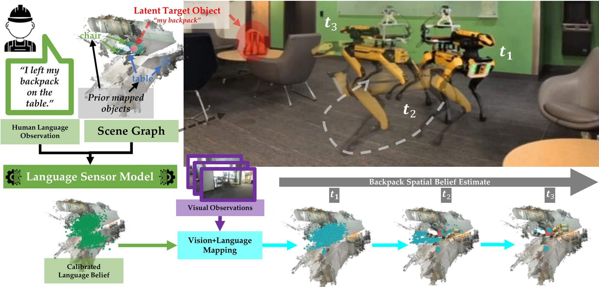
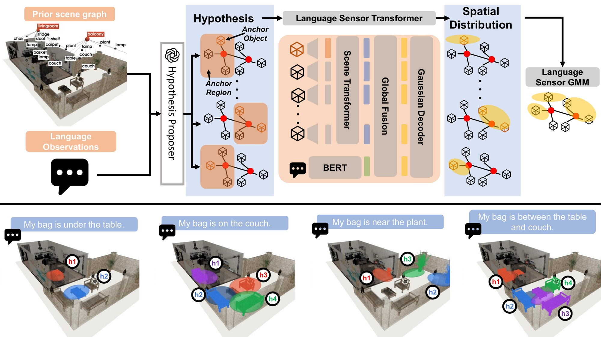
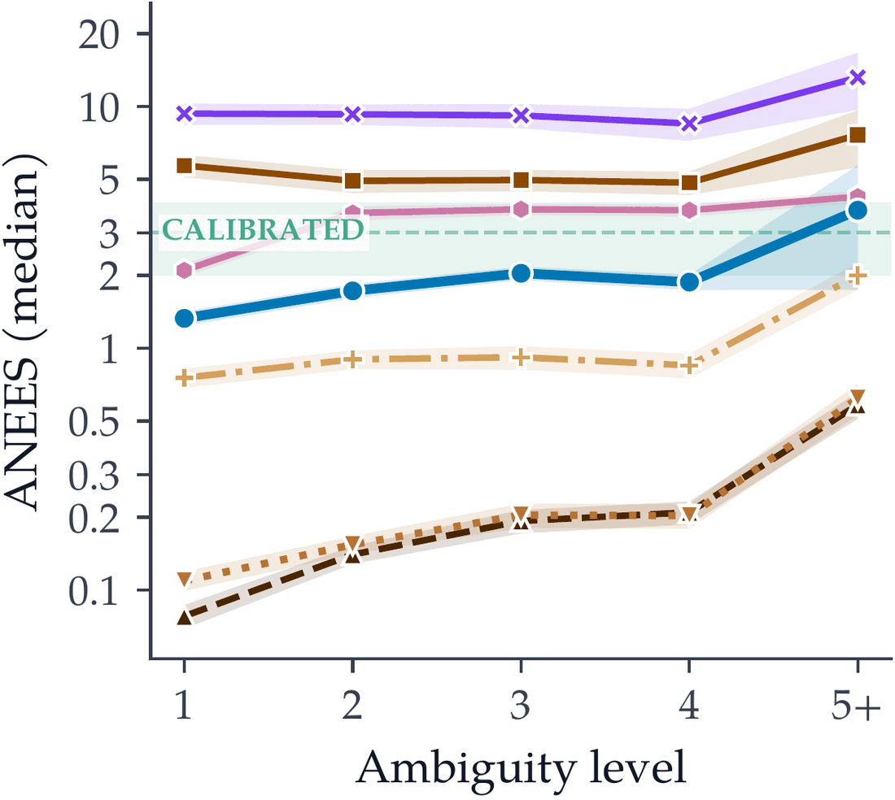
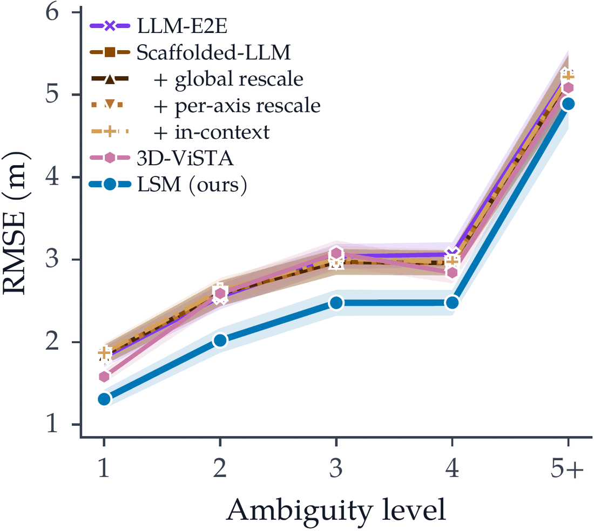
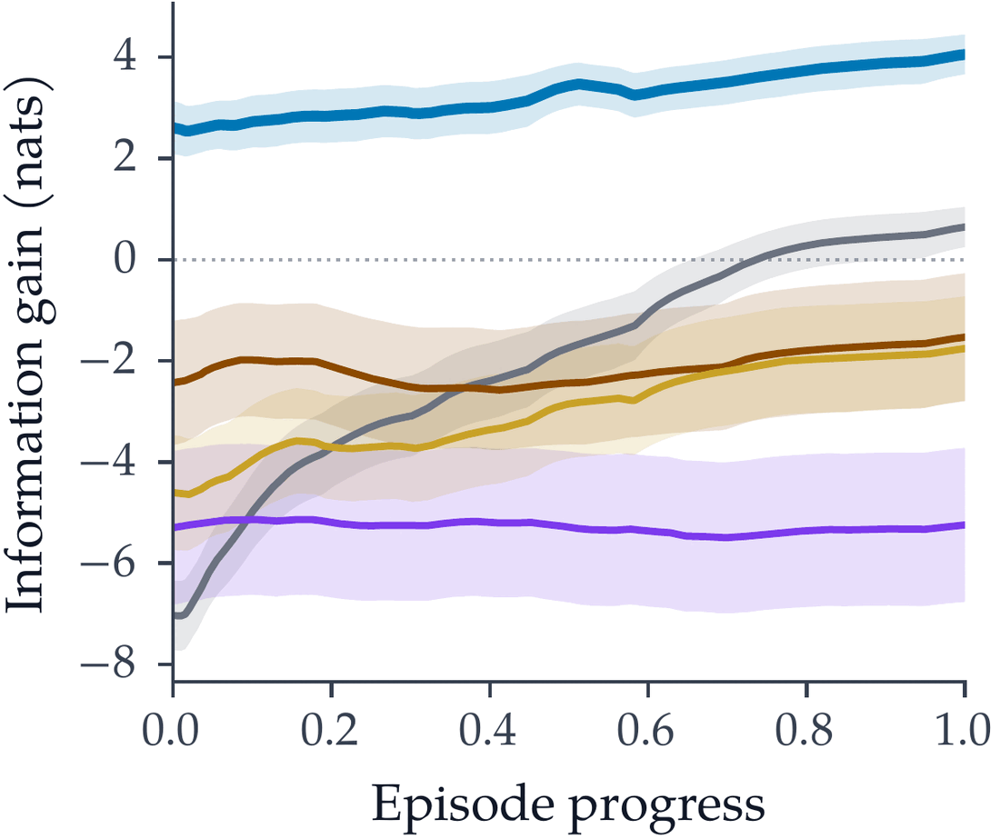
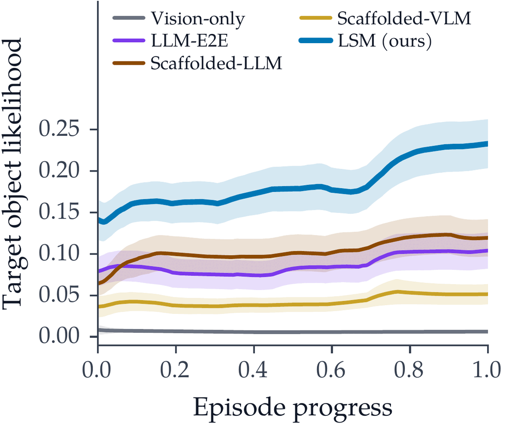

Language Sensor Model
Maps an utterance and scene graph to a calibrated Gaussian mixture over the target’s 3D position.
CoRL 2026 · Conference on Robot Learning
1MIT Laboratory for Information & Decision Systems 2MIT Computer Science & Artificial Intelligence Laboratory
*Correspondence: aryannav@mit.edu †Equal advising

People constantly tell robots where things are, often about places the robot can’t see. We treat these utterances as a sensor measurement: a calibrated probability distribution over where the target is, fused with vision in a single Bayesian belief map.
Robots deployed in human-centric environments routinely receive natural-language descriptions of spatial information (“I left my backpack on the table”) that reference parts of the world beyond their perceptual field of view. Traditional metric-semantic mapping ignores this signal, while off-the-shelf multimodal models remain limited in 3D spatial reasoning and are not directly amenable to fusion with other sensor modalities. To convert language observations into a calibrated spatial distribution, we train a Language Sensor Model (LSM) that maps each utterance and its scene-graph context to a multimodal distribution, with mixture weights encoding referential ambiguity (e.g., which table) and component covariances encoding spatial uncertainty (e.g., where on the table the target lies). We then introduce VL-Map (Vision-Language Metric-Semantic Mapping), a probabilistic framework that treats these language predictions as stochastic observations and fuses them with onboard perception within a unified belief map. On the VLA-3D benchmark as well as on a real-world mobile robot, LSM is the only language predictor whose covariance estimates remain within the calibrated regime; fused into VL-Map, it leads to more accurate predictions of the target object location (~70% more probability mass on the true target compared to the strongest foundation-model baseline).
Maps an utterance and scene graph to a calibrated Gaussian mixture over the target’s 3D position.
Fuses language and vision as independent observations in one voxel-level Bayesian belief.
The only calibrated language sensor we tested, with ~70% more belief on the true target than the best baseline.
“My backpack is on the table” is ambiguous in two ways, and LSM models each one explicitly.

Each proposed anchor contributes one mode, so belief stays on every plausible referent instead of collapsing to a single guess.
Given the map, language and vision are conditionally independent, so the robot’s belief factors into one term per sensor.
Implemented in Hydra as additive per-voxel log-odds. Vision updates every frame; each utterance adds one language update.
LSM is the most accurate and the only calibrated predictor. Post-hoc rescaling of LLM covariances doesn’t transfer to new scenes.
| Method | val_seen | val_unseen | ||||
|---|---|---|---|---|---|---|
| RMSE ↓ | NLL ↓ | ANEES → 3 | RMSE ↓ | NLL ↓ | ANEES → 3 | |
| Scaffolded-LLM | 1.78 ± 2.87 | 35.82 ± 345.06 | 72.01 ± 690.23 | 3.68 ± 5.50 | 86.04 ± 370.05 | 171.91 ± 740.27 |
| + global rescale | 1.78 ± 2.87 | 6.17 ± 19.92 | 4.16 ± 39.88 | 3.68 ± 5.50 | 9.33 ± 21.33 | 9.93 ± 42.77 |
| + per-axis rescale | 1.78 ± 2.87 | 5.94 ± 16.06 | 4.18 ± 32.18 | 3.68 ± 5.50 | 8.23 ± 15.92 | 8.23 ± 31.93 |
| + in-context | 1.77 ± 2.77 | 7.94 ± 38.52 | 10.90 ± 77.09 | 3.45 ± 5.59 | 23.75 ± 89.07 | 42.28 ± 178.35 |
| Scaffolded-VLM | 2.27 ± 1.69 | 25.11 ± 49.40 | 50.08 ± 99.06 | 2.79 ± 3.86 | 39.92 ± 164.04 | 79.57 ± 328.03 |
| 3D-ViSTA (fine-tuned) | 1.55 ± 1.64 | 2.33 ± 2.93 | 4.69 ± 10.66 | 3.66 ± 4.43 | 4.59 ± 4.05 | 9.08 ± 22.27 |
| LSM (ours) | 0.71 ± 0.69 | 0.94 ± 1.67 | 1.83 ± 1.99 | 1.46 ± 1.68 | 4.17 ± 8.71 | 3.42 ± 16.71 |
As utterances get more ambiguous, baseline overconfidence compounds across mixture components. LSM stays in the calibrated band.


Overconfident language sensors make the fused belief worse than ignoring language. Only LSM improves on the uninformed prior throughout the rollout.


| Method | Mean IG (nats) ↑ | Mean prob. mass ↑ | Argmax dist. (m) ↓ | Success % ↑ | Miss % ↓ |
|---|---|---|---|---|---|
| Target observed by vision (n = 44) | |||||
| Vision-only | −0.60 | 0.006 | 5.52 | 0.0 | 79.5 |
| LLM-E2E | −6.22 | 0.095 | 2.35 | 22.7 | 52.3 |
| Scaffolded-LLM | −1.85 | 0.130 | 2.25 | 36.4 | 38.6 |
| Scaffolded-VLM | −2.26 | 0.046 | 2.45 | 9.1 | 50.0 |
| LSM (ours) | +3.77 | 0.223 | 1.41 | 52.3 | 4.5 |
| Target never directly observed (n = 10) | |||||
| Vision-only | −5.20 | 0.007 | 5.47 | 0.0 | 80.0 |
| LLM-E2E | −1.15 | 0.155 | 1.97 | 40.0 | 40.0 |
| Scaffolded-LLM | −2.93 | 0.079 | 3.27 | 20.0 | 40.0 |
| Scaffolded-VLM | −4.89 | 0.083 | 2.36 | 10.0 | 60.0 |
| LSM (ours) | +1.65 | 0.293 | 1.75 | 70.0 | 30.0 |
“There is a cabinet that is over the counter.”
With a scene graph from an earlier mapping run, VL-Map puts belief on the target before Spot ever sees it. Vision alone has nothing until visual confirmation.
“I left my bag on the table.”
@inproceedings{naveen2026language,
title = {Language as a Sensor: Calibrated Spatial Belief
Estimation in 3D Scenes from Natural Language},
author = {Naveen, Aryan and Liu, Jason Xinyu and
Carlone, Luca and Bobu, Andreea},
booktitle = {Conference on Robot Learning (CoRL)},
year = {2026}
}